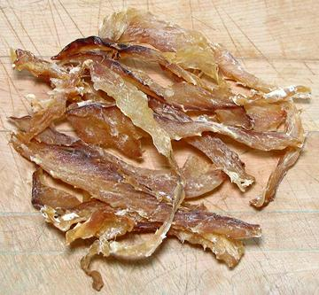

Stockfish

[Stoccafisso (Italy); Baccalà (Venice); Bakalar
(Croatia); Okporoko (Nigeria), Nti Okporoko (Nigera (collars))]
Stockfish is fish dried without salt. It is particularly important in
Iceland, Portugal, Italy and Nigeria. It is dried by cold air and wind
while hanging on racks. Some fermentation from cold tolerant bacteria
also takes place. This can only be done in regions with the right
climate. The most common fish used is Cod, but Haddock, Pollock and Cusk
are also used. Without salt to hold water, stockfish is very hard and
dry. It can take several days of soaking (water changed periodically)
to soften it.
Stockfish is relatively rare today in most of the world, because it
has been much replace by salted fish. This was made possible in the 17th
century by the great salt pans of Aveiro, Portugal, which brought the
price of salt down to where salting fish was economical. The critical
climate requirements for stockfish are not so strict for salted fish. An
indoor method for producing quality stockfish was developed in 2015
with European Union funding.
More on Dried, Salted & Smoked
Fish
Italy:
Italy is a major importer of stockfish from
Norway, most of which is either whole fish or the prime parts. Recipes
call for soaking 24 hours, then removing skin and scales before
cooking, which will involve moderately long simmering. Norwegian
stockfish entered Italian cuisine before 1500.
Nigeria:
Nigerians are major consumers of stockfish.
It entered the country's cuisine around 1969 as famine relief donated
by Norway, and is now considered a kitchen essential. While Nigeria
does buy some whole fish, most of what they buy is less expensive heads,
collars and offcuts. Since it's universal in Nigeria, nobody gives any
instructions - except one authoritative cookbook I posess. It is put
in a pot of water and brought to a boil, then taken off the heat and
allowed to sit in the water overnight. Then it is deboned and made
recipe ready. I've read they don't remove the bones because they chew
them up for calcium, but I've found even the smallest bones to be
unchewable.
Buying:
This is not an easy product to find, except
on the Internet. The photo specimens of "Stockfish Bits" were purchased
from an African market in Los Angeles (North Hills) for about 2018 US
$11.33 / pound. It was produced in Canada.
Storing:
Keep dry in a very tightly sealed container.
It should be good for at least a year.
Prep:
Depending on thickness, Stockfish will take
at least 24 hours of soaking to be recipe ready. I put it in a heat
sealed 2-mil polyurethane bag in the refrigerator. I refill once by
cutting a corner off, draining and refilling, then re-seal. In the
fridge, soaking takes longer than the Nigerian method give above.
sf_stockz 180407 - www.clovegarden.com
©Andrew Grygus - agryg@clovegarden.com - Photos on this
page not otherwise credited are © cg1 -
Linking to and non-commercial use of this page permitted